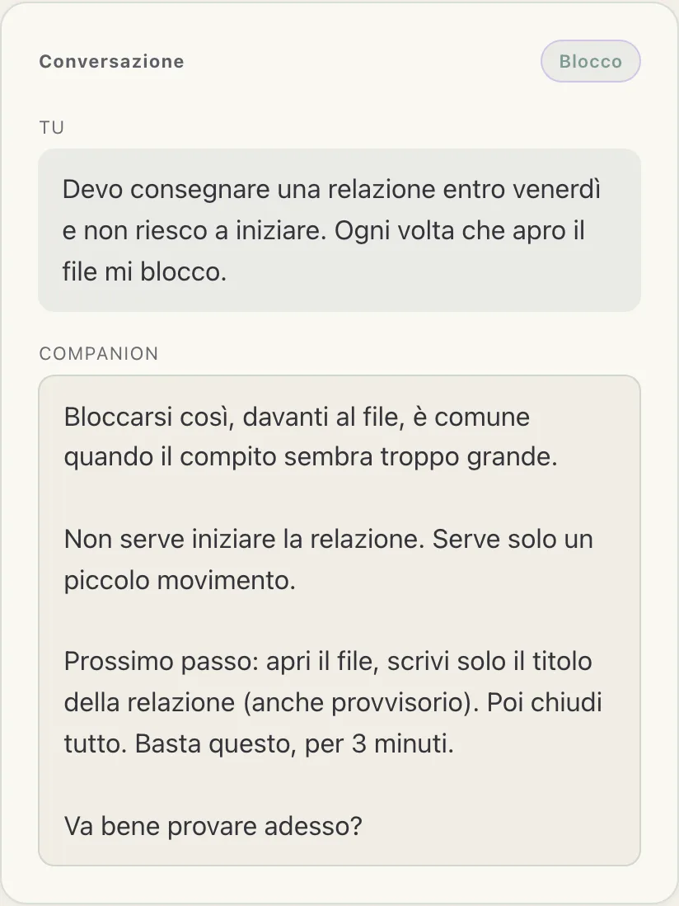
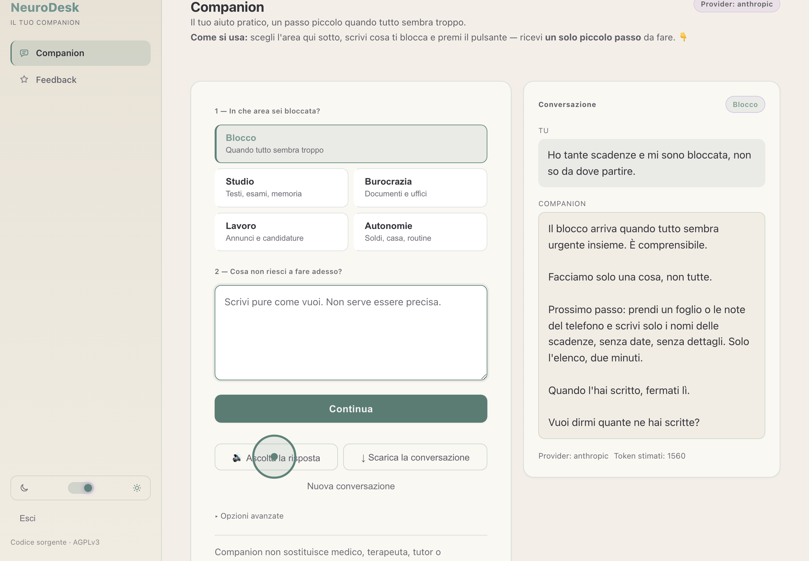

Ti va di provare NeuroDesk?
NeuroDesk è già in prova con un piccolo gruppo. Cerchiamo altre persone neurodivergenti — con ADHD, autismo, AuDHD, DOP, DSA — che lo usino e ci dicano, senza troppi giri di parole, cosa aiuta e cosa no.
Prossimo passo (2 minuti): apri il libro alla prima pagina del capitolo. Non leggere ancora. Solo aprilo.
Scrivi l'attività che non riesci a iniziare. NeuroDesk ti risponde con un solo piccolo passo da fare, non con una lista lunga.
Semplice, e senza fretta
Ti diamo un codice
Entri con un codice, senza dare il tuo nome. Nessuna registrazione.
Lo usi quando vuoi
Scrivi come ti viene, anche poche parole. Ricevi un passo alla volta.
Ci dici com'è andata
Poche domande con dei pulsanti, e uno spazio per scrivere. Non servono relazioni.

Una conversazione vera, non un esempio inventato. Un blocco, una risposta, un passo solo.
Facile da usare, anche nei giorni no
Puoi ascoltarlo
Se leggere stanca, tocca Ascolta la risposta: NeuroDesk te la legge ad alta voce, con la voce del tuo dispositivo. Niente da installare.
Testo grande, colori morbidi
Caratteri grandi e leggibili, poco movimento. C'è anche il tema scuro, per quando la luce dà fastidio.
Funziona con i lettori di schermo
Compatibile con gli screen reader e con la navigazione da tastiera. Nessuno resta fuori.

Il pulsante Ascolta la risposta compare sotto ogni risposta: un tocco e te la legge.
Vuoi provarlo?
Scrivici e ti mandiamo un codice per iniziare. Bastano pochi minuti quando ti va.
Voglio provarloTi rispondiamo noi, una persona vera.
Hai già un codice? Entra da qui.
Prima volta? Leggi la guida rapida: come si usa e cosa fare se qualcosa non va.
Poche informazioni, chiare
Non serve essere esperti
Non c'è modo giusto o sbagliato di usarlo. Ci interessa capire com'è per te.
I tuoi dati restano tuoi
Entri senza nome. Le conversazioni sono cifrate sul nostro server e le puoi cancellare quando vuoi.
Non è una terapia
NeuroDesk è uno strumento pratico. Non sostituisce medici, psicologi o servizi.